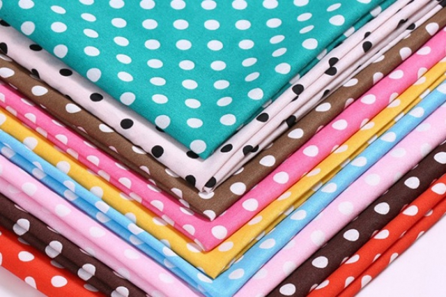

<!--
  Generated template for the PerfilPage page.

  See http://ionicframework.com/docs/components/#navigation for more info on
  Ionic pages and navigation.
-->
<ion-header>

  <ion-navbar color="light">
    <ion-buttons start>
      <button ion-button menuToggle>
        <ion-icon name="menu"></ion-icon>
      </button>    
    </ion-buttons>
    <ion-title>PERFIL</ion-title>
  </ion-navbar>

</ion-header>

<!-- BOTON FLOTANTE DE WHATSSAPP-->
<ion-footer>
    <ion-fab bottom right>
        <a href="https://wa.me/3505325406?text=Buenos%20dias%20tengo%20una%20duda" button ion-fab color="secondary">
          <ion-icon name="logo-whatsapp" style="font-size:30px;"></ion-icon>
        </a>
    </ion-fab>
</ion-footer>

<ion-content padding>
    <ion-item>
        
    </ion-item>
      <button style="display: block; margin:auto;" ion-button color="primary" (click)="registro()">Registrarse/Iniciar sesión</button>
      <button style="display: block; margin:auto;top: 20px" ion-button color="primary" (click)="logOut()" *ngIf="estadito == true">Cerrar Sesión</button>
</ion-content>
